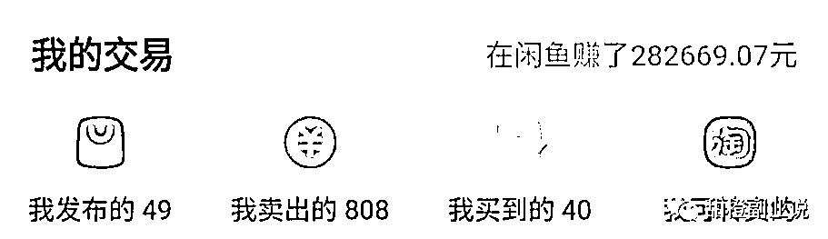

来源：https://wi0p58be3a2.feishu.cn/docx/WVyTd9cIwoMbkgxpr6BcLVrTnyg
卷首语
你好，我是甜橙。很高兴以电子书的形式与你见面。
先做个简单的自我介绍，我是95后职场副业斜杠青年，一个专注做闲鱼副业搞钱的女生，擅长闲鱼的运营方法和销售技巧，一条闲鱼社群合伙人，一个爱折腾的搞钱自媒体人。
身在职场的我，为什么会选择做闲鱼副业？
我是2022年6月毕业的，因此读书期间刚好处在新冠疫情爆发期间，这我看到了这个世界充满着不确定性，多一份收入和不断提升自己的能力都非常重要。
而且我是实打实的寒门，父母都是实打实的农民，家中没有任何祖业，家境不优渥的我本科和研究生期间的学费、生活费都是通过申请助学贷款和用课余时间线下兼职维持的，从小的经历和社会的大环境让我坚定了赚钱和提升自己的想法。
但由于疫情原因，整个经济市场环境不好，加上我刚毕业，工作经验不足，因此工资也不是很高。但每个月的工资除了要支付在重庆的房租水电气费用外，还要支付助学贷款，给父母几百到一千的生活费，迫于种种现实的压力，我考虑到我可以在网上找找副业！
在接触闲鱼之前，我接触过虚拟资料项目、快团团项目、小红书教辅资料等，但因虚拟资料面临违法风险，我放弃了。快团团项目要求引流宝妈粉到私域卖产品等，而我一个未结婚的根本没有宝妈粉，尝试了一段时间后果断放弃了。小红书教辅资料项目就更别提了，付出和收获不成正比，变现太难。。。。
而闲鱼副业，不用去引流、没有违法违规风险，每天花两三个小时且只需要一部手机随时随地都可以操作，于是去年十月我付费599元加入了一条闲鱼团队，认真做闲鱼副业！
这一年多以来，我左手主业，右手闲鱼副业。虽然过程很艰辛，但好在通过努力，主业方面也从职场萌新走向人生新阶段，获得了本行业助理工程师职称。
副业方面我成为了一条闲鱼社群合伙人并通过闲鱼变现了近六位数、还清了七年助学贷款。
写这个卷首语的初心是为了鼓励更多的人面对困难、现实的压力要努力想办法解决，不要一直处在内耗之中，而是要想办法解决问题。同时，不管处在什么环境中，都要不断提升自己。如果可以，选择做一份靠谱稳定副业让自己多一份选择，不管这个副业是不是闲鱼副业。
这是我自己目前在测试做的2个闲鱼账号成绩，可以参考一下。

虽然目前收入比不上圈内很多大神，因为我做事比较拖拉，再者我的执行力也不如众多圈友，但我从来不信什么一夜成名，一夜暴富，只信一分耕耘，一分收获。
闲鱼是一个无门槛、低成本的项目，利用零碎时间就可以操作，容易变现，适合我们普通人。属于越努力越幸运的项目了。
有一些小伙伴私信我：期待推文，想知道闲鱼卖货怎么个流程？
所以，今天我就来具体分享一下：闲鱼卖货全流程步骤。伙伴们，争取一边看一边可以上手实操起来，一起赚点零花钱。
希望我的分享对大家有所启发和帮助。
一个手机一个账号，账号用自己的淘宝账号登录即可。尽量不要用信用分“较差”的闲鱼号--因为流量难起来。建议大家用极好/优秀/良好/中等的号进行上架使用。
1、昵称：读的顺的/专业的任选其一。
2、头像：首选帅哥/美女/宠物，次选二次元/车车/风景图等，禁止使用带水印的图，禁止使用清晰的明星图
3、简介：接地气的，体现专业，让顾客觉得年底店铺产品性价比高，质量好。
4、学校/工作/喜欢的：随便设置，或者模仿同行的。
两个地方，这两个地方是最简单的，其他的详细选品知识,看我的文章
闲鱼平台选品技巧揭秘！太实用啦！（一）
闲鱼平台四大选品技巧揭秘！（二）
第一个地方是：猜你喜欢。看到想要多的品直接点击进入看一下动态有没有出单，看一下评论区近期有没有出单。有出单的，那就截图图片，拼多多看看有没有利润，有利润上架。或者看到同行出的好直接上架，和同行卖一个价格或者比同行价格高，等到卖出再找上家。
第二个地方是：分类这里。选择其中任何一个类目，点击进入查看选品，想要多的，出单多的，那就截图图片，拼多多看看有没有利润，有利润上架。

图片哪里来？
家秀中寻找图片，切记不要用商家图，不要用商家图，有很多博主是让大家直接用商家图，实际闲鱼是二手平台，客户群体还是想要看真实的实拍图，
所以尽量用实拍图几个原则：
a 清晰的实拍图
b 产品整体图和局部细节图
c 尽量是正方形或者4：3的比例
d 图片尽量9张用完
图片如何放？
主图：看得清是什么产品的产品图次图选择展现商品优势特点、颜色的图片放六七张图片不需要裁剪成1：1不要用白底图不要用淘宝拼多多商家图刚刚做的不需要放视频，如果实在是想放第一帧画面挑选好。
什么是图片标签，有些小白可能还不懂，看下图，红色圈住的里面字比如：钓鱼船加厚充气船，这就是标签，标签词实际是对应产品的核心搜索词或者叫做产品长尾词，是对标题的补充，会影响产品的曝光，所以也要重视，标签也可以添加一些款式尺寸价格的描述
图片标签几个原则：
a 可以参考闲鱼下拉框，拼多多下拉框，淘宝下拉框都可以的
b 尝试换不同关键词去下拉框搜索可以增加曝光比如收纳箱也可以叫整理箱，储物箱等
c 标签词最少5个起步，而且不要有重复的标签
d 标签词除了可以是产品关键词之外也可以是一些产品细节的补充，比如价格，卖点，款式尺寸的说明。
有些小白可能标题是啥都不知道，那我截图红色圆圈中那些就属于标题，标题空行下面属于文案，标准的标题是60个字符也就是30个汉字，但是实际上闲鱼相对来说不是那么严格，可以长一些也是没有问题的
标题如何如何去写？如果不会组合标题的话，小白最简单的办法就是参考同行标2题去做，闲鱼同行或者多多淘宝同行标题，我们参考多多标题几个原则
a 不要选择销量zui高的标题，也不要选择销量低于100的标题
b 选择的标题必须和你的产品是符合的，也就是属性符合
c 标题中一般不建议带大品牌，当然有时候带上品牌有好处，但是也会有风险
文案其实包括几个点，产品的售出原因，产品的卖点，产品的规格尺寸，以及服务售后等注意事项
1、文案可以写的几点信息
1.1卖的原因（和男朋友分手、厂家清仓、仓库直销、特价处理，店不做了，创业失败等等）
1.2产品的卖点
1.3产品的规格
1.4售后规则（售出不退不换/无理由退换/收到x天内有质量问题退换/质保情况等一些信息）1.5引导点击“我想要”进行咨询
2、文案类型：
2.1复制同行进行修改
2.2闲置文案
2.3专业卖家文案
这上图是我写的一个文案模板，仅供参考，这个产品高价产品一个利润200+以上，卖了几十台。
定价之前先克服一个小白的定价恐惧心理：不要害怕你定的价格高没有人买，这互联网都是大数据推送的，你价格高平台自然会推送给能接受这个价格的人，我们有的产品利润率百分之50以上，有的客户甚至去淘宝对比发现闲鱼比淘宝还贵，但是也有人通过闲鱼下单，所以不要担心这个，六年的卖货经验已经证明了价格不是这个产品能否卖出去的唯一因素。
如何定价也是一个小白比较头疼的问题，定价有几个原则
zui低价格的产品做好低价引流，可以少赚差价比如百分之10的差价和佣金
低价引流不要过分比如你一共四个价位，低价引流是99，第二个低的价格不要超过200
其他产品直接在货源的价格上加百分之30的利润
价格设置以比如99,199或者128等数字结尾，这是消费心理学决定的
1、标注地方（看下图）
2、价格类型：
2.1实标：卖多少标价多少。
3.2虚标：标一个低价吸引顾客进来浏览和询问。
1、一二线城市
2、根据产品的调性来
3、发布地址几个原则：
a 不要发布到小城市，尽量发布到一二线城市，这样曝光会高
b 发布地址尽量不重复，发一个或者2个产品就换个地址
c 发布地址可以参考百度搜索对应产品关键词找到一些需求好的地方发
d 尽量避开同行多的地址发布可以提高出单率。
小白不知道闲鱼如何选择发布地址的可以看我下图：
哪里找到的货源就去哪里下单。
一般我是拼多多货源，就去拼多多下单。
优选有运费险/七天无理由退货的商家，没有就算。
将闲鱼买家地址复制下来，然后到拼多多上面去拼单，当拼多多卖家发货了,你把这个订单复制一下,放到闲鱼那里发货就行了,这个交易过程就完成了
一、买家收到货后要不要询问马上签收？
1、建议不要
2、如果要问，建议从询问到货使用感受入手让他签收给好评
3、如果不问的话就是自动签收等回款。
3.1闲鱼的钱会打到哪里？支付宝
3.2闲鱼上发货后多久自动确认收货？若是邮寄发货，自"卖家已发货"状态起，一般10天自动签收。若是见面交易，自"卖家已发货"状态起，买家未在10天内确认收货且未申请退款的，交易自动成功。
以上就是闲鱼卖货全过程，相信看完的你已经在大脑过一遍流程了，快快行动起来吧！若是你跟着流程走了一遍出单赚钱了，记得私信跟我报喜吖，我会非常开心哒。
今后，甜橙会分享更多赚钱与省钱的干货内容，欢迎大家关注我哦~
本文标签：闲鱼卖货、闲鱼副业、闲鱼无货源、闲鱼
以上就是今天分享的内容啦，我们下次见~